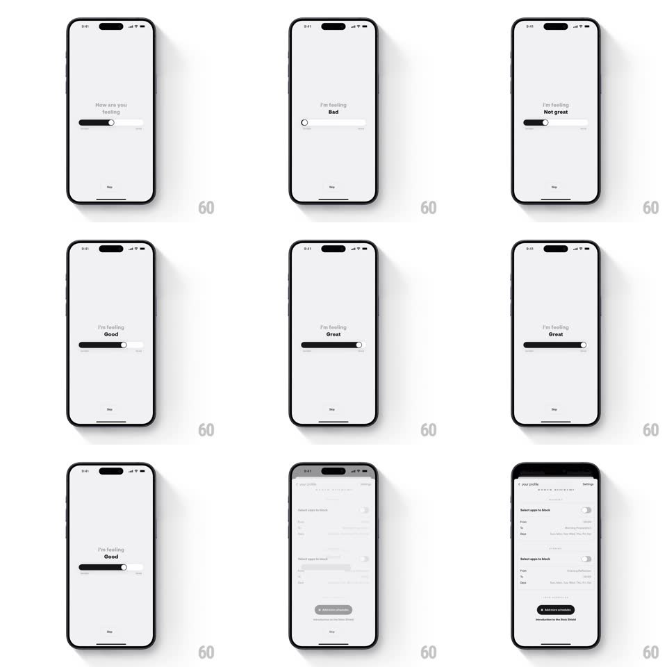

Media
Frame-by-frame

Rebuild this interaction 1:1: Stoic's feeling slider - scrub a single horizontal pill and the mood label crossfades through Bad, Not great, Fine, Good as the black fill follows your finger.

Rebuild this interaction 1:1: Stoic's feeling slider - scrub a single horizontal pill and the mood label crossfades through Bad, Not great, Fine, Good as the black fill follows your finger.
## Integration
Integration: stack-agnostic spec - springs given as stiffness/damping, timed motions as duration + curve; map every value to your framework and animation library of choice.
## Scene
A pale-gray screen with a small centered question ("How are you feeling"), one horizontal pill slider (white track, black fill from the left, round knob), faint min/max glyphs at its ends, and a quiet Skip at the bottom. Above the slider sits the answer: "I'm feeling" in gray, with the mood word in bold black.
## Motion spec
Pattern: continuous-fill mood slider with crossfading labels.
- Drag: the black fill and knob track the finger 1:1, no detents; the knob scales up slightly while touched (1 to 1.15, 150ms).
- Labels: the mood word crossfades as the knob passes each quarter boundary (opacity + 2px vertical shift, 180ms); "I'm feeling" stays static - only the word swaps.
- The fill has a soft inner shadow so it reads as a groove filling with ink, not a flat bar.
- Release: a hair of inertia (the knob settles with spring ~420/28 over the last few px); a light haptic ticks at each label boundary crossing.
- The word sits closer to the slider as values approach center - a subtle 4px vertical drift that keeps the composition balanced.
## Calibration
- Four labels exactly (Bad, Not great, Fine, Good), evenly spaced quarters; no emoji, no color coding - the app stays monochrome.
- The knob must be grabbable across the full track, including at the very ends.
## Reduced motion
Labels swap instantly; no knob scale.
## Don't miss
- The fill starts from the left edge always - the scale reads bad-to-good left-to-right.
- Everything is gray-on-gray except the black fill and the bold mood word.